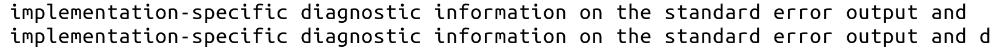
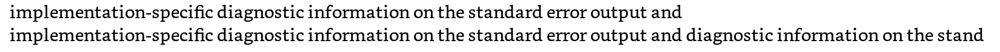
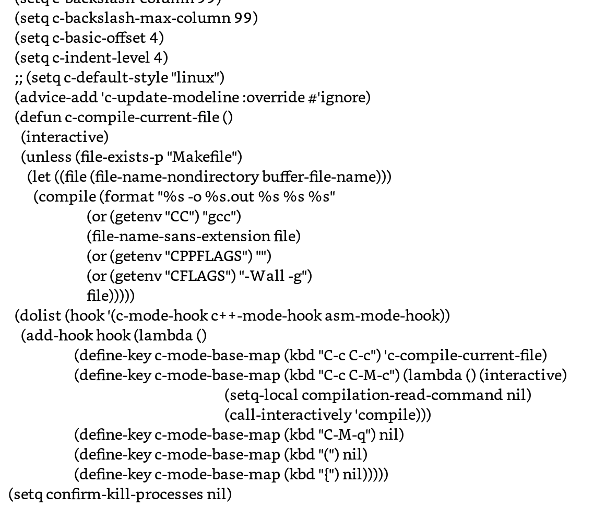
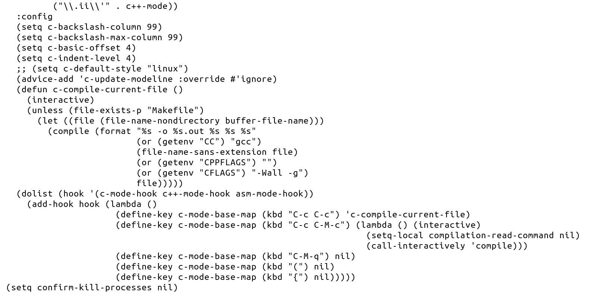
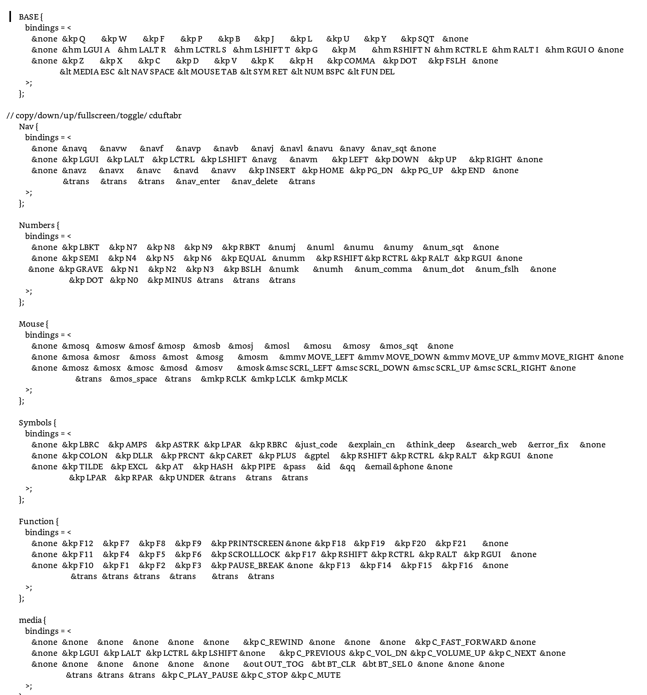

技术时代的生活与工作
Table of Contents
\mainmatter
\chapter*{序章\ 技术何为?} \markboth{Introduction}{序章\ 技术何为?}
- 任务编号：以名为“廖青松”的男婴为身份出生在重庆普通家庭
- 开始时间：2002-11-04
- 结束时间：总有一死
- 完成难度：简单到极难，活着也没BOSS啊?
- 需要小时：一生，大约三万天
- 本章要点：我对于技术与人生的看法
(如果你进入了HTML版本，请点此处进入PDF版本。)
世界嘈杂、瘾品横流、随机与即时构成新的枷锁，而真正的自由来自主动的剥离。当目光离开诱惑、离开广告、离开无意义的瞬息刺激，心才开始变得干净。生活越简，能量越纯；越慢，感受越深；越少，越能看见真正的自己。
身体是意志的第一块土地。空腹的清明、弱光的安静、低温的醒觉、缓慢进食的耐性，都在一点点重塑我们早已被工业习惯磨钝的感官。行走、奔跑、提举、拉起、俯卧撑、壶铃、农夫行走——这些最朴素的动作让人重新理解力量的意义：力量不是爆发，而是日复一日不受伤、不懈怠、让心跳稳、让精神长的那种沉稳。
饮食亦是自律的延伸。避免加工、远离高糖盐油，回到豆果菜、坚果与发酵的本味，让身体习惯真实的能量，而不是被化学甜味与工业脂肪驱使的假饱与假快乐。克制不是苦行，而是温和地恢复本能。
至于技术，真正的价值不在追逐流行，而在深入底层、理解根本。用 Emacs1，不是为了高效，而是为了与世界拉开距离，与自己靠得更近；不随机、不即时、无广告、无噪声，是一种长期的心性训练。读 LFS、LKD 与 SOC 文档，写驱动、调性能、跑 QEMU、玩内核、读源码，是为了获得一种“我真的懂了”的安静感。而这种懂，不是为了炫耀，不是为了沉迷，而是为了让工作成为谋生技能，让生活成为真正的生活。
真正的智慧是：学会技术，然后把技术放下；拥有力量，然后让力量变得温柔。生活是吃饭、睡觉、读书、编程、走路、壶铃；生命是健康、乐观、会意、精进、闲适与稳稳的力量。
世界广袤、事物繁多，而心若清澈，幸福忽然变得极小，也极近——不来自外界，只来自自身安静而坚定的内心。

Figure 1: free-your-soul
1. TODO 被技术改变的生活
-30025年，一切都变了。人类诞生了。
-20025年，一切都变了。文明诞生了。
-10025年，一切都变了。文字诞生了。
-2025年，一切都变了。数学诞生了。
-225年，一切都变了。哲学诞生了。
-5年，一切都变了。一神教诞生了。
政治，火药，指南针，造纸术，印刷术，枪，农药，化肥，化学，工业化，城市化，流水线，民主。
1945年，一切都变了。二战结束。技术的阴影笼罩大地。
1965年，一切都变了。人工智能火热。技术停滞或是爆发?
1975年，一切都变了。中国迎来开放。技术在中国大地遍地生根。
1995年，一切都变了。互联网火热。技术迎来它们的终极载体。
2025年，一切都变了。人工智能火热。技术停滞或是爆发?
现代技术要点:(上瘾/传销/非人)
一，靠人传销，如比特币。
二，不要人类，如人工智能。
三，让人上瘾，如社交媒体。
- 衣/食/住/行/性…
- 以前:自制/采集/自建/走路/真情
- 以前: 自己的命运在自己手上
- 以前: 靠身体劳作生活，自己的劳动直接贡献在自己身上
- 现在: 拼多多/拼好饭/烂尾楼/新能源/彩礼
- 现在: 自己的命运在政府/老师/老板/网友…手上
- 现在: 靠国家/公司/投资生活，靠机械化身体动作/脑力说唱生活
2035年，一切都变了。ChatGPT，我该生孩子吗? 下面是我的个人信息:…
2. 学技术的哲学
- 开始时间：2025-11-19
- 结束时间: 2026年前
- 完成难度：难难难
- 需要小时：100+
- 本章要点：linux/c/zig/rust/rtos
人没有梦想那和咸鱼有什么区别呢? ——周星驰
2.1. 学习什么技术
| procress | url | for |
|---|---|---|
| fag | flag/cintro | c, pretent iam tsoding |
| embedded C book | read book | c, how compiler/os/c works |
| Yeetcode | leetgo/book | cpp[rust], algo ds, solve task |
| paperlike-c/el | paperlike-go | elisp,paperlike emacs controler |
| ziglings | ziglings | zig, basic ziglangs speed run |
| zag | fag | zig, I have language erotic |
| paperlike-zig | paperlike-el | zig, make cli/tary |
| nixos r2s | github-repos | nix, for network addiction |
| TsurgizOS | os.phil-opp | zig[rust], make general os for cv |
| nixos rasberry-pi | github-repos | nix, for embedded os/screen/driver |
| clings | ziglings | c, lings but clang |
| freertos emulator | rtos | c, use general rtos |
| lvgl eink rtos | lvgl | c, embedded ui/driver/sdl |
| lvgl lora loc | graphic | c, embedded openstress/sdl/lvgl |
| RZOS | rtos | zig, make general rtos |
| Celest | game | zig, embedded game/sdl |
| Safephone | electronic | lvgl/eink/openstress/lora/3Dprint |
| stm32/nix/electronic/network | ||
| nsfw image/text detected |
- All in all, it's for 技术哲学
- 网络/低速/时间/域名/ai过滤/linux内核构建-r2s
- 屏幕/护眼/低成瘾/驱动设计/eink屏幕算法-paperlike
- 通信/安全/无依赖/去平台/lora远距离通信-safephone
- 交通/电工/电子电路/openstress-去五佰2那里学修车
2.2. 怎么学习底层技术
- 第一阶段：打基础（C / Linux / GCC / Emacs）
- C 语言：学会指针、内存管理、结构体、函数指针；刷一些小项目，比如实现 malloc、shell、http server。
- Linux 基础：熟悉命令行、文件系统、进程/线程、信号、管道、套接字。
- GCC：学会编译流程 gcc -E/-S/-c/-o，理解预处理、汇编、链接，玩一下 objdump 和 nm。
- Emacs：把它当IDE来用，掌握基本编辑、调试、补全、LSP支持。
- 第二阶段：系统调试与逆向（GDB / QEMU）
- GDB：练习断点、单步、查看寄存器/内存、调试多线程/远程调试。
- QEMU：
- 用它运行 Linux kernel 或裸机程序。
- 学会 qemu -S -s + gdb remote 调试，体验调试内核的感觉。
- 研究 QEMU 的设备模拟（比如 VirtIO、PCI），理解虚拟化和硬件抽象。
- 第三阶段：进阶编程语言与系统（C++ / Zig / RTOS）
- Zig：Zig 是现代系统编程语言，学习它的构建系统、内存模型，可以和 C/C++ 混合编程。
- RTOS：从 FreeRTOS 入手，学任务调度、中断、任务间通信（队列/信号量）。可以用 QEMU 模拟 Cortex-M 板子跑 RTOS。
- 第四阶段：融会贯通（大型项目 / 内核 / 编译器）
- QEMU + GDB：调试内核启动、写内核模块。
- 编译器开发：研究 GCC 或 Clang 的前端/后端；或者用 Zig 写一个简化编译器。
- 个人项目：比如写一个简易 RTOS，或者在 QEMU 里跑自己写的内核。
- 操作系统构建与升级（Yocto/Android/内核） 在树莓派上交叉编译 Linux 内核，修改驱动或设备树（Device Tree）进行硬件适配。 尝试用 Yocto 或 Buildroot 构建自定义 Linux 镜像，加入自己编写或修改的驱动模块。 安装和编译 LineageOS（Android for Pi）或类似 Android 系统，修改系统服务或 HAL 层。 实践 OTA（Over-The-Air）升级机制，模拟系统升级和回滚操作。 硬件 Bringup（CPU/GPU/Memory/Peripherals） 利用树莓派的 GPIO、SPI、I2C、CAN、PWM 等接口，练习外设 Bringup 和驱动调试。 连接摄像头模块、显示屏（LCD 或 E-Ink）或音频模块，编写驱动和控制程序。 使用 perf/ftrace/gprof 分析 CPU/GPU 性能瓶颈，优化程序调度。
- 系统稳定性与性能优化 构建多线程/多进程网络服务，使用 socket 编程实现客户端/服务器通信，模拟并发场景。 在树莓派上测试高负载条件下的系统稳定性，分析内核日志、内存占用和 CPU/GPU 使用率。 实践内核参数调优，如调节调度器、内存缓存策略，观察性能变化。
- 客户功能定制与基线升级 自己设计一个树莓派应用（如小型智能家居控制器或信息显示终端），从硬件 Bringup 到应用功能定制完整流程。 模拟不同版本的系统镜像管理，练习分支合并、基线升级和版本回退。
- 加分技能训练
- 低功耗优化：通过关闭不必要的外设、调节 CPU/GPU 频率或使用 E-Ink 显示屏练习功耗控制。
- 虚拟化/容器：在树莓派上安装 QEMU/KVM 或 Docker，运行多系统虚拟环境，模拟嵌入式应用部署。
- 芯片平台经验：如果有 MTK 或其他 ARM 板卡，可以对比树莓派练习移植和平台适配经验。
3. 编辑器哲学
This is my blog and p(pdf)log which written in org and \LaTeX{}, and emacs/nixos config, code snippest and even more, all in just one repo. 这是仓库是我的博客也是我用\LaTeX{}写的书，还是我是emacs和nixos配置，代码模板等等等。
(org-babel-do-load-languages 'org-babel-load-languages '((emacs-lisp . t)(shell . t)))
if [[ -f "/home/$USER/.emacs.d" ]] then
git clone --depth 1 https://github.com/jamescherti/minimal-emacs.d ~/.emacs.d
fi
ln -sf $PWD/nixos/ ~/.config/;
ln -sf $PWD/snippets ~/.config/;
ln -sf $PWD/nixos/hmdz.pyim ~/.config/;
ln -sf $PWD/nixos/post-init.el ~/.emacs.d/;
if [[ $XAPIAN_CJK_NGRAM != "true" ]] then
sudo cp /etc/hardware-configuration.nix $PWD/nixos/hardware-configuration.nix
chmod 777 $PWD/nixos/hardware-configuration.nix
mkdir -p $HOME/.config/sops/age
cp .keys.txt $HOME/.config/sops/age/keys.txt
sudo nix-channel --add https://nixos.org/channels/nixos-unstable
sudo nix-channel --update
sudo nixos-rebuild switch --flake /home/$USER/.config/nixos#$hostname --option substituters 'https://mirrors.ustc.edu.cn/nix-channels/store https://cache.nixos.org' --cores 6 -j 12;
fi
这是org的文学编程能力最简单的体现，从c到bash，在一个org文件中能一起运行，神奇吧! 为什么emacs这么强大?大概就是因为它使用的elisp相当“灵”吧，再说为什么emacs这么小众，也大概是它的elisp太“难”了吧。有些人不敢学，怕自己投入又得不到钞票，有些人不能学，他们把自己的心给了别的教派如“vim”“vscode”于是固步自封，自高自大，vim模态天下第一! 我曾同样如此，抱着网上破烂配凑出的neovim，对那些大神的操作流口水但是又没法认同emacs。其实犹豫不定很正常，进入一个陌生的环境，很多怪人怪事，emacs更是如此，你常常不知道那些人口中说的eglot/flycheck/eww是什么?常常写错一些代码。当然这同样也是学习emacs的乐趣，也正是它的陌生带来的新鲜，而且有了chatgpt的帮助，学习起来相当方便。
- 如果人生还有一次，我还选emacs
- minimal
- based on the clean and fast minimal-emacs.
- purezen
- pure white and black theme written by me called "purezen".
- reproducible
- package manager is using nixos.
- simple
- just a 1500+ lines of post-init.el.
- keyboard
- for my ZMK conifg, the only one soul.
- effcient
- selecting elegantly like queen and editting fastly like king.
- zen
- the world is tremendously large, the items are enormously rich, only me along writting with leere feeling, true happiness come from nothing but within.
- 我的编辑器邪教之旅:
浏览器里的vimium C，因为wsl学习的neovim，因为换上nixos后抄的helix配置，因为大四没找工作太闲学的emacs。我每用一个就大呼“我草，早知道，还得是xx!”，然后给同学老师家人都安利安利，给同学说“我有一宝”，给老师说“看我操作”，给家人嘻嘻傻笑像是捡到五百钱。虽然这代表着我非常的闲，但是折腾emacs确实让我不是很闲到以至于抑郁，我还是在用Vimium C和emacs，赋予我闪电切换页面的神奇体验，当然，代价是它们也让我得了一种名为“换页面换buffer”的ADHD，再者，其实不用vim/emacs也会得，只不过叫作“懒得换页面就直接玩手机”ADHD，“懒得折腾电脑就去玩CSgo成了换弹癌”的ADHD。在这个时代，玩csgo和玩emacs有什么区别呢? 一个能炒皮肤，另一个能折腾皮肤，如是而矣。
- 我使用emacs没有太多原因就只是:
- 依赖少，之前用vim，我就要关心vim键位的app适合用来看pdf，看epub看文档，整vimium和vim一个键位/什么lazygit/tmux/fcitx/alacritty，还生怕它们之间有什么矛盾，关键vimscript也不适合作为灵活的语言，整天很困扰很憋屈，我还折腾colemak、虎码和nixos，我的天，对于任何一个大脑快定型的成年人来说，这简直是噩梦! 幸好有emacs解救我于快捷键地狱中，装包能list-package再一点就安装了，pyim配置虎码就一行的事，那里还要fcitx5怎么怎么样! 自从用了emacs，我再也没有折改过firefox，一是我没时间，二是我就只用emacs的eww，我也就不再在乎什么vimium的键位和vim不一样了， 能用就行 才是真理! 再说用上了elisp，那才叫美梦成真，想写一个工具简直就比玩手机打游等更有意思多了。什么tmux/lazygit/nixos，现在我只想笑笑，我用vterm/magit/任何平台都能跑emacs不是爽多了吗? 只要给我emacs/编译器，写代码就是轻轻松松的事! emacs改好了我的强迫症和极多主义，现在我心宽又极简，感谢emacs!
- 功能多，之前用helix，虽是开箱即用但是很明显它的功能只限于写代码，快是快但是对我这样的学习困难型人来说，快和慢没有多大的区别，只会让我再难受于“我好慢它好快，我是不是x痿了”，helix是个自带丰富功能工具，但是对于习惯homerow的人来说其实用vim mode没有什么增益，只会让我更迷茫“我能直接不动手就能上下了，干啥还要这个hjkl??”。有插件和服务器模式这点就足以胜过helix了。当然我从helix的文档也学到了很多编辑知识，如果没有它的emacs主题和打算用scheme写插件系统，和让我折腾很久的helix eink主题，我也不会有潜移默化现在的编辑技术和极简主题审美了。
- 分心小，之前用vimium那就是一个换换换的感觉，总是想去换页面，看看新闻看看新工具，上下跳转，左右腾挪，helix功能太少不能在里面呆太久，而vimium是个浏览器插件在里面呆着又太容易去娱乐，
用vim主要是去youtube参加编辑器神战，helix也好vimium也好。其实我学习emacs，到能快速掌握avy靠得是之前用过vimium，学习surrond/expand靠的是helix，能熟悉info/man/tldr靠得是之前在终端里学习vim。总之emacs必然是编辑技术的一个终点站。 - 定制化，没有一个term emulator支持比例字体的，只有emacs，也有人说了为什么用bookerly，就用vscode的什么ubuntumono/nerdfont不好吗? 这我得确实说:“非等宽字绝对好用”，为什么空格得道M一样宽，为什么l和W一样宽? 现在编程/终端处处都是等宽字体，很多人在根本就没用过的情况下痴迷在各种nerdfont间切换并坚持自己的“信仰”，这种信仰只有在用了一个优美的非等宽字体才会破灭。多显示1.45内容? 还是只有0.6896551724137931的丑恶巨大空格? 要用非等宽得到emacs看看，因为没有一个editor的主题是可以自己完全定制的，vscode那样的使用javascript还难以控制还过于复杂资源又大的就算了。elisp/fsf/clean/simple，学emacs之前根本不能理解这话! 有些事情得是自己做了才能得之心而应之于手!
- 历史，50年历史的编辑器，计算机史的一页，还能写100年左右。
- 装b，(linus/stallman)开源巨人们/(rust/python/java/ruby/curl/各种函数式…)之父们钦定编辑器。

Figure 2: mono显示80个字符

Figure 3: 等高下非等宽显示116个字符

Figure 4: 明显可以看出等宽不符合人的阅读习惯，只有在多行修改(mc)或跳转(avy)中需要字符不变才“稍显有益”。

Figure 5: 非等宽下，英文字符清晰区别明显，字符间隔小，更优美自然连续
4. 操作系统哲学
- network, 471mb hosts to block internet out of my pc with dnsmasq and dae proxy tool based on epbf… you know I am ill about internet? because I am in china, and the nsfw/trump/4chan dudes, I love they so much, so I add they into my hosts.
- emacs editor, + nixos, they both ruin my early adult life.
- wm: sway, minimal config, pure white look, although
miku cursor, now, I use plain mouse instead. - shell: fish+foot, with all I need in, direnv/many alias/zoxide/git/and thefxxk or thefxxk updated to "chatgpt"'s codex nowadays?
- browser: firefox [default uninstall], I use eww because I hate browser.
- fully reproducible, even with dict/font/anime wallpaper!
- zig/linux/ccpp doc in ngnix, all kind texinfo can read in emacs.
- with sops, to store my 0.1 dollar's deepseek account apikey, and chat with my ai girlfriend with my payment passward.
- I am tired of nixos, but I can't leave it, because after using nixos eveything is hard to do in other distor, like show off to other distor users "BTW, I use NixOS".
4.1. 用linux只为戒
翻开中国帝王史，有多少帝王是沉迷女色后国家衰亡，多少帝王是皇太后控制后抑郁早亡。 野史里选王要的是看他不好色否? 当皇帝得看他有无抢夺妇女。翻开网络史发展，有多少人民群众是沉迷情色后国家衰亡，多少人是被色情控制后抑郁早亡，看人得看他好色否? 好不好色，得看他懂得怎么预防。oppo的天气预报能跳到擦边短剧，bing的结果第一个BMI测试广告中跳到黄色导航， 百度误输成baidu.co中进入黄色应用下载，网易看见过全露的黄色直播，B站中处处是擦边广告和直播，微博中卖到各种片，知乎里表露情色隐私更引人浏览，我的世界游戏里用色情披风，淘宝里随便看情趣用品，openai支持成人内容，twitter全是福利姬，就连QQ空间连上擦边广告商，onlyfans比所有ai公司利润更高，pornhub全球流量前10，整个00后的网络被“这到提醒我了”占据，整代女人被商业文化营造黑丝和大胸的“性感”，整代男人被情色文化成为无脑动物与被情欲“冲动”控制，男人就该好色? 女人就该这样美吗? 天下皆知美之为美，斯恶也。互联网33%的流量，70%的男性，30%的女性，90%男性沉迷其中…数字不会说谎，一切已经到来，生存与繁衍不再重要，存在不过是不断刺激感官。不只是色情… 网络带来的问题似乎总是和成瘾有关，赌博/购物/社交/游戏… 就连互联网最自豪的正面形象所谓的“利于学习”也成为了信息过载的社会巨大问题，自由的代价是什么? 自由即是强迫。
论我怎么戒色?答:学习技术、理解技术、控制技术，学习自由软件，远离商业软件，拒绝即是自由。
- 成瘾源于: 随机|不必|即时|匿名|易得|免费|广告|失范
- 通过 路由器+NixOS ，不使用手机与笔记本
- 时间
- 限时，2-5PM，足够一天专注
- 速度
- 网速，1Mbps，足够文本传输
- 空间
- 域名，非编程网站，471MB
- 强制
- 禁cache.nixos.org以止系统更新
- 软件 使用 emacs ，不使用浏览器与IDE
- tavily
- chatgpt
- gptel
- github
- consult-gh
- leetcode
- leetgo
- firefox
- eww
- vpn
- dae/dnsmasq
- obsidian
- org
- wiki
- nginx/info/tldr/devdocs/man
- 硬件 使用 eink ，不使用音响与普通键盘
- 音乐
- 无音响
- 游游
- 无显卡
- 动漫
- 无色彩
- 社媒
- 无软件
- 购物
- 无网络
- 视频
- 竖立屏
5. 键盘流哲学
5.1. 设计哲学
- 与原生相合 (win)
- 不冲突 (special prefix)
- 合乎习惯 (stay base)
- home row效率 (home row effiction)
- general in os(browser, editor)

Figure 6: keymap of my keyboard
5.2. 分层
- base层，colemak-dh，最快速与舒适的英文布局
- nav层，上下左右，快速移动，C-c C-~ 为前缀，emacs快速选择
- num层，数字键，控制sway的窗口，与系统剪切板和应用菜单
- mos层，鼠标上下左右，C-c C-; 为前缀，一些emacs功能。
- sym层，全部符号，gpt prompt与个人信息快速输入层
- fun层，function 1/2.12 层
- med层，提供蓝牙/媒体切换
5.3. 本地刷录
#!/usr/bin/env bash
# ===== CONFIGURATION =====
GITHUB_OWNER="NestorLiao"
GITHUB_REPO="zmk-config"
GITHUB_TOKEN="$(cat ~/.github_token)"
ZIP_DEST="zmk_build.zip"
UNZIP_DIR="zmk_build"
LEFT_FW="corne_left-nice_nano_v2-zmk.uf2"
RIGHT_FW="corne_right-nice_nano_v2-zmk.uf2"
SETTINGS_RESET="settings_reset-nice_nano_v2-zmk.uf2"
# ===== FUNCTIONS =====
flash_settings_reset() {
echo "Flashing settings reset firmware..."
for i in 1 2; do
echo "Reset device $i/2 into bootloader mode..."
# Wait for mount
while [ ! -d "/media/NICENANO" ]; do
sleep 0.5
done
echo "NICENANO detected. Flashing settings reset..."
if [ -f "$SETTINGS_RESET" ]; then
cp "$SETTINGS_RESET" /media/NICENANO/
echo "Settings reset flashed $i/2."
else
echo "❌ $SETTINGS_RESET not found in current directory."
exit 1
fi
echo "Waiting for NICENANO to unmount..."
while [ -d "/media/NICENANO" ]; do
sleep 0.5
done
done
echo "✅ Settings reset completed twice."
}
download_latest_artifact() {
echo "Fetching latest artifact..."
run_id=$(curl -s -H "Authorization: token $GITHUB_TOKEN" \
"https://api.github.com/repos/$GITHUB_OWNER/$GITHUB_REPO/actions/runs?per_page=1&status=success" \
| jq -r '.workflow_runs[0].id')
if [ "$run_id" == "null" ] || [ -z "$run_id" ]; then
echo "❌ No successful workflow run found."
exit 1
fi
echo "Found workflow run ID: $run_id"
artifact_url=$(curl -s -H "Authorization: token $GITHUB_TOKEN" \
"https://api.github.com/repos/$GITHUB_OWNER/$GITHUB_REPO/actions/runs/$run_id/artifacts" \
| jq -r '.artifacts[0].archive_download_url')
if [ "$artifact_url" == "null" ] || [ -z "$artifact_url" ]; then
echo "❌ No artifacts found for run $run_id."
exit 1
fi
echo "Downloading artifact zip..."
curl -L -H "Authorization: token $GITHUB_TOKEN" \
"$artifact_url" -o "$ZIP_DEST"
echo "Unzipping..."
rm -rf "$UNZIP_DIR"
unzip -q "$ZIP_DEST" -d "$UNZIP_DIR"
}
flash_from_local() {
if [ ! -f "$ZIP_DEST" ]; then
echo "❌ $ZIP_DEST not found in current directory."
exit 1
fi
echo "Using local $ZIP_DEST..."
rm -rf "$UNZIP_DIR"
unzip -q "$ZIP_DEST" -d "$UNZIP_DIR"
}
flash_firmware() {
local fw_path="$1"
echo "Please reset the device into bootloader mode..."
while [ ! -d "/media/NICENANO" ]; do
sleep 0.5
done
echo "NICENANO detected. Flashing $fw_path..."
cp "$fw_path" /media/NICENANO/
echo "Done."
echo "Waiting for NICENANO to unmount..."
while [ -d "/media/NICENANO" ]; do
sleep 0.5
done
}
flash_left_right() {
flash_firmware "$UNZIP_DIR/$LEFT_FW"
flash_firmware "$UNZIP_DIR/$RIGHT_FW"
}
show_usage() {
echo "Usage: $0 <mode>"
echo "Modes:"
echo " 1 - Flash settings reset twice"
echo " 2 - Download from GitHub and flash left/right"
echo " 3 - Use local zmk_build.zip to flash left/right"
}
# ===== MAIN =====
if [ $# -ne 1 ]; then
show_usage
exit 1
fi
case $1 in
1)
echo "== Mode 1: Flash Settings Reset =="
flash_settings_reset
;;
2)
echo "== Mode 2: Download and Flash =="
download_latest_artifact
flash_left_right
;;
3)
echo "== Mode 3: Local Flash =="
flash_from_local
flash_left_right
;;
*)
echo "❌ Invalid mode: $1"
show_usage
exit 1
;;
esac
echo "✅ All done."
5.4. 不只键盘
- Absolute Enable Right Click & Copy
- Force Enable Right Click & Copy.
- Authenticator
- Authenticator generates two-factor authentication codes in your browser.
- Bar Breaker
- Hides fixed headers and footers on pages you visit.
- ChatGPT Ctrl+Enter Sender
- Use 'Ctrl+Enter' for sending messages in AI chat services like ChatGPT. Prevents accidental sends and allows line breaks with Enter.
- ChatGPT Disable Auto Scroll - FREE
- Stop annonying scrolling in ChatGPT. Prevent jerky animation of appearing text.
- ClearURLs
- Remove tracking elements from URLs.
- Decentraleyes
- Protects you against tracking through "free", centralized, content delivery.
- Default links not to be underlined
- Restores non-underlined hyperlinks by default (setting text-decoration: none).
- Disconnect
- Make the web faster, more private, and more secure.
- Enforce Safe Search (=Adult Filter)
- Toggles the built-in filter on many search engines (see
- Focus On Left Tab After Closing
- When a current tab is closed, the left tab (or the right tab on RTL
- Font Contrast
- Improves webpage readability.
- FuckCSDN
- Clean CSDN's limitation scripts
- Google Search Ad Remover And Customizer
- This extension gives you the ability to customize how your Google search results
- Hide shorts for Youtube™
- Hides shorts from YouTube™ from home page, subscriptions and search results.
- hide-scrollbars
- Hides page scrollbars!
- I still don't care about cookies
- Community version of the popular extension "I don't care about cookies"
- Invert Colors
- A simple add-on that inverts the page colors.
- No Emoji
- Browser extension to remove emoji.
- Shut Up: Comment Blocker
- Blocks comment sections on many popular websites.
- Stack Copy Button
- A copy button for Stack Overflow code boxes
- Tab Sidebar
- Adds a sidebar with foldable tabs.
- uBlock Origin
- Finally, an efficient blocker. Easy on CPU and memory.
- Unhook - Remove YouTube Recommended & Shorts
- Hide YouTube related videos, shorts, comments, suggestions wall, homepage
- Vimium C - All by Keyboard
- A keyboard shortcut tool for keyboard-based page navigation and browser tab
6. 屏幕哲学
Real Mono Theme, two colors are enough for emacs.
6.1. Feels:
A collection of real monochrome emacs themes in a couple of variants.


pictures's font list: bookerly, ubuntumono, firacode, terminess, bookerly blod ltalic.
6.2. Features:
- Not Greyscale, no blur anymore, it's much better to use eink screen for pure black and white!
- Easy to customize, can set the only two colors by config the default face's foreground/background color.
- Distraction-free, no extra info-overwhelming causing by font-lock, only few font diversity in magit/dired etc for better function recognize.
- Full, configed 370+ faces, I didn't see any monochrome theme can reach that much, as my daily driver, it's good enough.
6.3. Tips for mono:
- (global-hide-mode-line-mode 1), build your own brain memory
- (no-emoji 1), alter emacs to be "text editor" instead of discord
- (show-paren-mode -1), build your own eye insight
- (window-divider-mode -1), too, build your memory
- (display-line-numbers-mode -1), too, build your own eye insight
(defvar my-alternate-font "-DAMA-UbuntuMono Nerd Font-regular-normal-normal-*-13-*-*-*-m-0-iso10646-1")
(defvar my-default-font "bookerly")
(defvar fontfont 1)
(defun my-toggle-font ()
"Toggle between UbuntuMono and bookerly fonts."
(interactive)
(if (= fontfont 1)
(progn (set-face-attribute 'default nil :font my-default-font :height 160) (setq fontfont 0))
(progn (set-face-attribute 'default nil :font my-alternate-font :height 210) (setq fontfont 1))))
- fringe specific mode auto hide
(defun my-set-fringe-face ()
"auto hide fringe face depending on major mode."
(if (derived-mode-p '(occur-mode gud-mode))
(set-face-attribute 'fringe nil
:background (face-attribute 'default :background)
:foreground (face-attribute 'default :foreground))
(set-face-attribute 'fringe nil
:background (face-attribute 'default :background)
:foreground (face-attribute 'default :background))))
(add-hook 'after-change-major-mode-hook #'my-set-fringe-face)
- elisp for toggling paperlike-hd to swtich between read and watch.
(defvar monitor-state 0
"Current monitor state, either 0 for read or 1 for watch.")
(defun monitor ()
"swtich monitor from read mode to watch mode"
(interactive)
(let((monitorpath "-i2c /dev/i2c-4")
(monitorcli "paperlike-cli ")
(monitorarg '(" -contrast " " -speed " " -mode " " -clear"))
(mode-state '(("9" "5" "1") ("2" "1" "3"))))
(split-window-below)
(other-window 1)
(switch-to-buffer "*Shell Command Output*")
(split-window-below)
(other-window 1)
(switch-to-buffer "*Async Shell Command*")
(progn
(dotimes (number 3)
(shell-command (concat
monitorcli
monitorpath
(car (nthcdr number monitorarg))
(car (nthcdr number (car (nthcdr monitor-state mode-state)))))
))
(sleep-for 1))
(setq monitor-state (if (= 0 monitor-state) 1 0 ))
(sleep-for 1.5)
(sleep-for 0.5)
(async-shell-command (concat monitorcli monitorpath " -clear"))
(let ((async (get-buffer-window "*Async Shell Command*"))
(shell (get-buffer-window "*Shell Command Output*")))
(when async (delete-window async))
(when shell (delete-window shell)))
(sleep-for 0.5)
(kill-buffer "*Async Shell Command*")
(kill-buffer "*Shell Command Output*")
(donothing)))
7. fag.h
Copied from tsoding's flag module: https://github.com/tsoding/flag.h Added tsoding's nob module: https://github.com/tsoding/nob.h.git
7.1. Quick Start
Check example.c
cc -o example example.c ./example -help
8. TODO fetch newest
9. 版本更新历史
\datechange{2025-11-23}{阴}
- leetcode: 把题都抓完了，这还不开刷开学，想后半生吃草?
- 配emacs: 翻了半天别人的配置，就找两包git-link，git-timemachine感觉不错。
\datechange{2025-11-22}{晴}
- C语言: 对C语言的复习还没开始。*妈的，互联网*
- leetcode: 完成了0题。*妈的，互联网*
- 又后悔了: 本地有chromium，hosts06忘了加，想用chromium看一下翻墙网站的兼容性，莫名发现谷歌搜索能用，又看起片来!
- 从今天起: 能只用emacs就只用emacs，能只用eww就只用eww，能问gptel就只问gptel。eww不能访问也别去试firefox，firefox不能访问也别去试chromium。
\datechange{2025-11-21}{晴}
- 域名: 为 columndeeply/hosts 提交了17868行新域名，这个 hosts 是我最近在网上看到的最大的 host 文件，达到了近410mb ，共12.576.671 行，专门用于 Porn ，今天比较闲就把之前使用 tempermonkey 写的自动根据关键词用 ublacklist 自动 block 和从 fackads/和 github u3m8 collection 提出来的 cdn 网站和以前又闲又愤青时期屏蔽的各种网站，进行比较有二万三千行的不同 host ，用后缀比如 gov/org/cn 过滤了一些自己动手又删了些，发现像很多云很多热门网站像 cloud.tencent.com./taobao/nvidia/xx.gov.cn 但用了这么久好像没有任何冲突，可能是我实在是没有怎么上网，只是用用 github 就够了。看起来很多，17868行，几天检查不完，但是也就只是它的703分之一，我看了下很多是 blogspot/tumblr ，互联网的域名真得是故意弄成这样难管? 如果说 porn 的域名长成这样: 028b2c9ad2a24433ab97b8e5dbf69597.mediatailor.us-east-1.amazonaws.com(这还真是 porn)，这能管? 设立 whitelist 比 blacklist 更容易，但网络的架构(tcp/ip-dns-domain)就不允许这种事，我也好久没有更新我的host了，用ai比用搜索引索好用多了，ai的用处就是过滤黄色网站，当然openai要开放成人内容这事说明: 其实也没什么一定得搜的事。用emacs看文档，把记忆留在自己的脑子里，比起什么网页要重要的多。
- 折腾emacs: iedit/embark-next-symbol/forge。
- 弄完了leetgo: 明天绝对开始刷题。
- 研究了github热门trending: 发现中文代码质量之差，全是卖课/卖舆论分析/卖盗版书pdf/卖前端ai的… fork外国大神后各种引流的，ruanyifeng周刊是可以的，但评论和想让他在issue里引流的项目也一言难尽的，看看nixpkg几千人才22k星，中文的一个openwrt教程就有30k星几百个人contribute，看看openai也才几十k星，deepseek上百k的星，看看各自的issues，openai很正常，deepseek就好似精神病的故乡，冷清又时不时出来几个弱智问题，外国人看了怕是会笑掉大牙。
\datechange{2025-11-20}{晴}
- leetcode: 完成对 leetgo工具的elisp改造。chatgpt很给力。明天一定刷leecode。
- real-mono-themes: 今日maintiner还没有动，看来工作很忙啊。
- 博客/pdf: 加入了新的org snippest，更深入学习了org转入latex更多方法，更完美的使用了本latex模板。
\datechange{2025-11-19}{晴}
- 天气好，玩了一下午: 结果踩在沥水槽腿掉下去了，还好只是擦伤。
- leetcode: 让chatgpt写leetgo的elisp工具，写到最后凌晨没网了!
- 后悔的一天: reddit里的china\irl我常常去看，实在是没意思，但总有一种引力让我去刷，莫名的又想看片，于是乎又成了看片加键政，什么高市什么献忠，吃瓜吃到10年的兽兽门，再看现在的其他事件，感觉10年代清新多了，那时候的主角还是87年“小妹”，现在则是0几年的“小妹”，真是世风日下，历史重是重复又重复，技术重是加强又如强啊，献忠机器人，何时到来? 假韩炳哲的话改下: “互联网让道德世风内涵成了空气，一切除了炫/爽/性没有他用”。
- 折腾nixos/emacs: 精简所有文件到博客这一个仓库。
nixos只用一个flake.nix和secrets.yaml再把一串key放到一个位置就能用了，简直是极简完了。 emacs只用一个post-init.init，再git clone下minimal-emacs到位，org再src运行一下，就能用了。 这两都是2000行的配置。总之我有了一个blog/pdf/emacs/nixos/snippest/hosts集于一体的仓库。完全可重现，从配置到经历，其它的代码也可以从其它repo里clone下来，但总之目前这些就是我大学大概折腾的所有玩具了吧。越说越感自己的脑残了，明明有女生喜欢我，我只有折腾这些sb玩意去了! 现在想起了，后悔得我都成了反科技主义了。
- 越说越后悔: 总之，刷题刷项目，早点找工作，早点重新联系她。别再做reddit上的支人了… 别再看什么瓜片了… 反技术的后果就是“深山老林里的怪人”!!! 第一，你还有家人要养，第二，你也没生存能力，第三，我还是渴望家庭，第四，你都花了二十多年在技术上，现在去深山，那你学的拼音/加法/英文/编程都是屁吗?
\datechange{2025-11-18}{阴}
\datechange{2025/11/17}{雨}
- 开始刷Leetcode: 完成0题，折腾leetgo去了，使用async-shell-command与emacs不全好用，两者的时间不一致问题，shell-command又卡emacs本身，两者同样不能管理弹出的shell输出。只能用完整的shell命令和在async里eval emacs function套娃看看。
- 将本“博客”的html和pdf上传了github.io: 只是不只为何几十分钟了 qingsongliao.github.io 还没有，明天再看吧。
- 完成了real-mono-themes的emac主题包: 从此emacs又多了个别具一格的主题，不过也许70年代的emacs就长这样吧，oldfasion never die。

Figure 7: real-mono-old
\datechange{2025/11/16}{阴}
- 开始写作
- 使用elegent模板: 搭建自己博客? 写书还是写博客? 干脆一起写吧。
\nocite{*} \printbibliography[heading=bibintoc, title=\ebibname] \appendix
10. 开发中遇见的各种软件问题
10.0.1. General Contributions
[ ]org-mode，提交pr增加INCLUDE的行末倒数行数的行为代码x, 加入mailing-list提出FR[ ]melpa，提交pr增加自己的leetgo package[X]consult-gh ，提交pr修改readme中的consult-gh-search-code的使用[X]melpa，提交pr增加自己的real-mono-themes[X]nixpkg，提交issue增加biospy等nix生理信号包[X]columndeeply/hosts，提交pr增加17868行新域名,修改脚本为0.0.0.0[X]pyim，提交issue修改%报错行为[X]addons.mozilla，eink插件
10.0.2. TODO how the ~/.mozilla/firefox/profiles.ini looks like?
the profiles name is set in nix as " profiles.firefox = {", I want you to write the default looks of that file.
[General]
StartWithLastProfile=1
[Profile0]
Name=firefox
IsRelative=1
Path=firefox
Default=1
10.0.3. TODO package leego elisp package as emacs package
- description: do leetcode in emacs with leetgo
- require: wget/pandoc/leetgo/
- wget for fetch image
- pandoc for markdown to org
- leetgo for pick/commit questions
- simple init, use leetgo
- batch fetch, (leetcode-fetch-batch "1 2 3") to fetch 1/2/3 questions
- also you can fetch contest,
- auto detected browser cookie, no need to fill cookies by yourself
- offline test, use pre fetched testcase/makefile/awk to local test tasks.
- org format, local image, and generally you can easily export all questions.
- wait I finished doing leetcode
10.0.4. FIXME How to modify org-mode's #+INCLUDE:
- how to contribute to org
- explain FR
Subject: [FR] Add support for reverse (negative) line ranges in `#+INCLUDE:` `:lines`
Hi all,
Org’s current `#+INCLUDE:` keyword supports selecting lines using the `:lines` parameter, e.g.:
- `5-10` — lines 5 to 10
- `-10` — lines 1 to 10
- `10-` — line 10 to EOF
However, Org currently does not support selecting lines counted from the end of the file.
I would like to propose extending the syntax to support “reverse line numbers”, similar to how many tools allow negative indexing. Examples:
#+INCLUDE: "x.txt" :lines "~5-" ; last 5 lines to EOF #+INCLUDE: "x.txt" :lines "~5-~1" ; last 5 lines to last 1 line #+INCLUDE: "x.txt" :lines "-~5" ; from beginning to last 5 lines #+INCLUDE: "x.txt" :lines "10-~1" ; from line 10 to last 1 line
This would make it much easier to include “the last N lines” of logs, datasets, generated files, etc., without needing to preprocess the file externally.
If there is interest, I would be happy to help test or contribute patches.
Thanks! —Qingsong
10.0.5. FIXME pyim % 字符触发 Not enough arguments for format string
使用虎码码表https://github.com/welandx/huma-danzi.pyim%EF%BC%8C%E5%90%8C%E6%A0%B7%E4%BD%BF%E7%94%A8%E5%85%B6readme%E4%B8%AD%E7%9A%84%E9%85%8D%E7%BD%AE 发现输入l时报错: Debugger entered–Lisp error: (error "Not enough arguments for format string") message("[l ]: 1.而 2.% (1/1) $ ") #f(compiled-function (string position tooltip) "使用 minibuffer 来显示 STRING。" #<bytecode -0x26f1e7f81176ed3>)("[l ]: 1.而 2.% (1/1) $ " 620 minibuffer) apply(#f(compiled-function (string position tooltip) "使用 minibuffer 来显示 STRING。" #<bytecode -0x26f1e7f81176ed3>) "[l ]: 1.而 2.% (1/1) $ " 620 minibuffer nil) pyim-page-show("[l ]: 1.而 2.% (1/1) $ " 620 minibuffer) pyim-page–refresh(nil) pyim-process-ui-refresh() pyim-process-run() pyim-self-insert-command() funcall-interactively(pyim-self-insert-command) call-interactively(pyim-self-insert-command) pyim-process-input-method(108) pyim-input-method(108)
删除hmdz.pyim中的%或使用中文的％使用时不会报错，发现pyim 有 % 就报错: Debugger entered–Lisp error: (error "Not enough arguments for format string") message("[l ]: 1.% (1/1) $ ") #f(compiled-function (string position tooltip) "使用 minibuffer 来显示 STRING。" #<bytecode 0x1d8cdaf8ba1c112a>)("[l ]: 1.% (1/1) $ " 624 minibuffer) apply(#f(compiled-function (string position tooltip) "使用 minibuffer 来显示 STRING。" #<bytecode 0x1d8cdaf8ba1c112a>) "[l ]: 1.% (1/1) $ " 624 minibuffer nil) pyim-page-show("[l ]: 1.% (1/1) $ " 624 minibuffer) pyim-page–refresh(nil) pyim-process-ui-refresh() pyim-process-run() pyim-self-insert-command() funcall-interactively(pyim-self-insert-command) call-interactively(pyim-self-insert-command) pyim-process-input-method(108) pyim-input-method(108)
10.0.6. DONE add sway emacs pkg?
10.0.7. DONE how to make rm safer?
let rm delete file to trash just don't use term+shell directly, use dired/magit…
10.0.8. DONE recentf moving file persisnt
every time I move my file and the path changed but the recentf didn't follow, causing production and memory lost. just maintin my own recentf list.
10.0.9. DONE pull request to the porn site list project
fix the columndeeply/hosts 's 127.0.0.0 to 0.0.0.0
by clone and compare the problem is that "I include a lost non-porn site in to it". not just "non-porn" sites, I also get a lot cdn server to block, which fetch from a lot of m3u8 streaming server. it may also block some movies which using the same server as porn sites… so, there is only KLUDGE for thing like blocking porn site, first question: what is porn? really? to be, the social media like twitter which spread sexual clip? the pornhub teaching mathmatic? the reddit/4chan/zhihu/weibo/… even the taobao can sell sex toys with sexual pictures, so blocking internet is blocking porn really? I don't know, it's a question for everyone.
finished, by
#!/usr/bin/env bash
set -euo pipefail
HOST_URLS=(
"https://raw.githubusercontent.com/columndeeply/hosts/main/hosts00"
"https://raw.githubusercontent.com/columndeeply/hosts/main/hosts01"
"https://raw.githubusercontent.com/columndeeply/hosts/main/hosts02"
"https://raw.githubusercontent.com/columndeeply/hosts/main/hosts03"
"https://raw.githubusercontent.com/columndeeply/hosts/main/hosts04"
"https://raw.githubusercontent.com/columndeeply/hosts/main/hosts05"
)
TMPDIR="$(mktemp -d)"
REMOTE_DOMAINS="$TMPDIR/remote_domains"
YOUR_DOMAINS="$TMPDIR/your_domains"
OUTPUT="hosts6"
echo "[*] Downloading hostlists..."
> "$REMOTE_DOMAINS"
for url in "${HOST_URLS[@]}"; do
echo " -> $url"
curl -sL "$url" \
| grep -E "^[0-9:\.]+" \
| awk '{print $2}' \
>> "$REMOTE_DOMAINS"
done
echo "[*] Normalizing remote domains..."
sort -u "$REMOTE_DOMAINS" > "$TMPDIR/remote_sorted"
echo "[*] Extracting your domains..."
grep -E "^[0-9:\.]+" /etc/hosts \
| awk '{print $2}' \
| sort -u \
> "$YOUR_DOMAINS"
echo "[*] Generating unique domains (hosts6)..."
comm -23 "$YOUR_DOMAINS" "$TMPDIR/remote_sorted" \
| awk '{print "0.0.0.0", $1}' \
> "$OUTPUT"
echo "[+] Done. Unique domains saved in $OUTPUT"
echo " Total: $(wc -l < "$OUTPUT")"
get uniq hosts, and update to github. it's I only get 23240 unique lines.
add 17868 new hosts
Used to maintain my hostslist, write a tempermonkey script with ublacklist addon to block chinese keyword search result automatically.
mainly it blocked sexual model gallary sites/Pirate JAV/and chinese porn m3u8 CDN which I filter from a github m3u8 collection repos/or anything non-programming like socialmedia/news/shopping…, occationally the script blocks org/edu/gov sites too.
I remove duplicate hosts in yours and delete non-porn sites, but there still too many which I can't checkout they all.
BTW, I didn't update my hostslist for a long time, because I just find blocking search engine and "hot" social-media instead porn sites is way more easier, I now use tavily/chatgpt/github in emacs only.
BTW, seems like use 0.0.0.0 instaed of 127.0.0.1 is faster.
10.0.10. DONE make Leetcode fresh tasks list
- have already?
- yes/no, yes, edit that file, no, get the files(testcase/question.md/solution.xxx)
- edit the files question to include src in end, solution.xxx to have mode line in header.
- download image to local, turn md in org format, and delete md one.
- add a allorg, to include all under src dir's question.org
- 支持无网本地测试，在源代码文件头部中加入mode line，在题目文件尾部中加入include 源代码
- 根据题号在相同的目录下抓取不同题目和几个指定语言，并下载至本地图片，再转化md为org格式
- 支持在根目录中得到src的所有org file的include
- md to org的==问题
- based on leetgo to creat a leetcode elisp pkg
- test leetcode emacs pkg instead
10.0.11. DONE learn how to reference in org
\cite, org-cite-insert unable to insert problem M-RET to enter cite list.
10.0.12. DONE upload large files into the github repo
use sed to filter, use what to split into small files.
10.0.13. DONE try to package real-mono-theme to melpa
minic almost-mono-theme, creat recipe, make pr wait for mainter check. I am familaring with github, feeling awesome!
10.0.14. DONE creat new account's github repos for github.io
have a usrname.github.io public repo, have index.html in it, in url
10.0.15. DONE upload Purezen to github
- description: theme that really monochrome A collection of real monochrome emacs themes in a couple of variants.
- clone a monochrome and study it https://github.com/cryon/almost-mono-themes
- minic a theme to creat a repo https://github.com/qingsongliao/real-mono-themes
11. 嵌入式软件招聘常见要求
- 本科及以上学历，嵌入式软件工作经验，电子、通信或计算机相关专业；
- 有ARM Linux软件的开发经验，熟练使用C++和C语言；
- 熟悉Linux常用设备操作，有spi、can、WiFi、audio、video相关驱动开发经验优先；
- 熟悉多线程、多进程和socket网络编程，有并发程序开发经验和良好的设计思路；
- 有机器人相关嵌入式设计或者实时系统经验优先。
- 负责yocto & android 的构建（Build）与升级（OS Upgrade），确保系统的稳定性和兼容性。
- 参与新硬件平台的 Bringup，包括 CPU、GPU、Memory 等核心组件的初始化和调试。
- 分析和解决系统稳定性问题，优化系统架构设计，提升整体性能和可靠性。
- 研究客户系统功能需求，定制和优化系统功能，满足客户特定场景的需求。
- 解决系统性能问题，包括 CPU、GPU、Memory 等资源的优化与调度。
- 主导基线升级（Baseline Upgrade），确保系统与最新技术和安全标准同步。
- 具备操作系统（如 Android、Linux）的构建与升级经验，熟悉系统启动流程和内核开发。
- 有硬件平台 Bringup 经验，熟悉 CPU、GPU、Memory 等核心组件的初始化和调试。
- 具备系统架构设计能力，能够优化系统性能并解决稳定性问题。
- 有基线升级经验，熟悉版本管理和代码合并流程。
- 具备客户需求分析和功能定制能力，能够根据客户需求优化系统功能。
- 熟悉性能优化工具（如 perf, ftrace, gprof 等），能够解决 CPU、GPU、Memory 相关的性能问题。
- 有嵌入式系统开发经验，熟悉低功耗设计和优化。
- 熟悉虚拟化技术（如 KVM, QEMU）和容器化技术（如 Docker, Kubernetes）。
- 有MTK芯片平台开发经验
12. 嵌入式招聘常见笔试问题
13. 嵌入式招聘常见面试问题
Footnotes:
本书的牛“图片”均出自于GNU.org的自由艺术。GNU 计划，又称革奴计划，是由Richard Stallman在1983年9月27日公开发起的，目标是创建一套完全自由的操作系统，将牛作为 gnu和emacs 的象征是因为gnu在英文中本身就有“牛羚, 角马”的意思，有趣的是gnu本意为Gnu is Not Unix… 再问里面的 gnu 什么意思? 还是Gnu is Not Unix，就像是中国的俗语“山上有座庙”，无穷尽也。
我父亲那边的车行亲戚
把什么现代诗选和中国皇帝传都丢了吧，再看下去这辈子就毁了! 只留下两本书，互联网浅薄与雅思7天词汇，一是提醒我互联网对大脑的“伤害”另一个是提升下我的大脑，最近几年或十年特别是高考后，感觉自己的脑子雾雾的。
我有点网瘾，所以通过家里的路由器限制一下。速度200kps，限制热门社交媒体的域名，时间上只有下午二点到五点能用。每次无限制上网都有一种沉迷的感觉，看黄片刷新闻作为瘾症生意在互联网真是完美载体，总之，戒断的痛苦真是难受啊!!!
晚上又用母亲的手机上网了，怎么试都发现这个github.io是404, 下载下来好像是html本身的问题。切换了一下账号发现看不了那个号了，问了下chatgpt发现github有新号防bot功能，没法只能重新用回我的NestorLiao账号https://github.com/orgs/community/discussions/55609?utm_source=chatgpt.com。